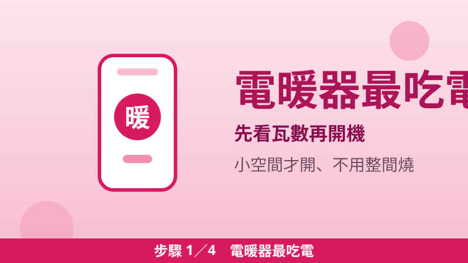
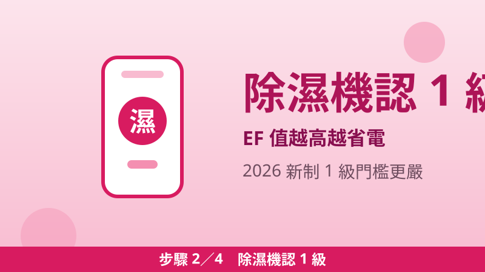
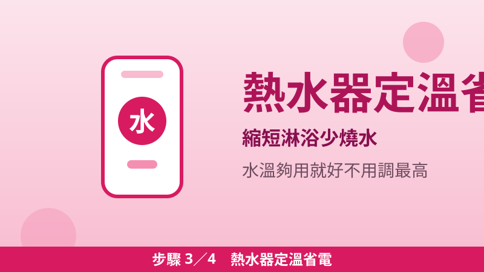
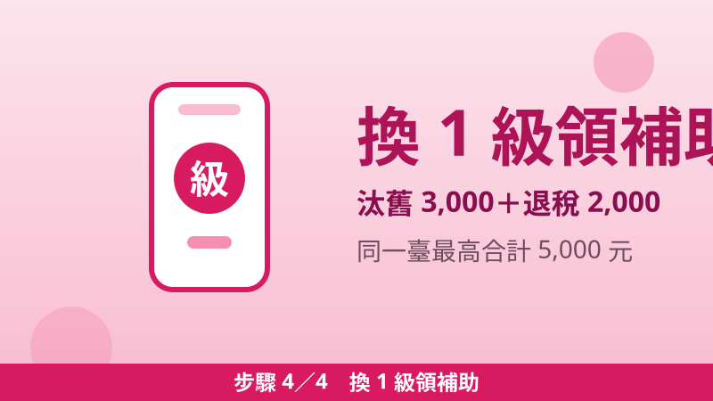

冬天電費為什麼比較貴？電暖器、除濕機、熱水器冬天省電 5 招
冬天電費變貴，通常不是電價漲了：冬天是非夏月電價，單價其實比夏月低。帳單變貴是因為用電量上升——電暖器一開就是上千瓦、濕冷天除濕機轉不停、電熱水器要把更冷的水燒熱。這篇先講冬天帳單變貴的三個原因，再給五招實際能做的省電方法，附本站已驗價的保暖好物。
冬天帳單變貴的三個原因
- 電暖器是吃電大戶：電暖器多半是電阻式加熱，耗電功率直接看瓦數標示，開一整晚的度數非常可觀。先看瓦數再開，不要整間房子長時間燒。
- 濕冷天除濕機轉不停：冬天濕氣重、衣服難乾，除濕機使用時間變長。同一臺除濕機，開 8 小時和開 3 小時的電費差很多，效率等級在這時候就看得出差別。
- 熱水器要燒更冷的水：冬天進水溫度低，電熱水器要花更多電把水燒到同一個溫度；洗澡時間拉長，燒的水也更多。
先搞懂自家電費怎麼算：住宅電費是分段累進，超過級距的那一段最貴，完整電價表與試算請看本站電費級距教學。冬天省電的目標，就是別讓總度數衝進貴的那一段。
冬天省電 5 招
- 電暖器只暖人、不暖整間房：人在哪裡暖哪裡，小空間、短時間開就好；睡覺改用厚棉被、電熱毯局部保暖，電暖器不要開整晚。買之前先看瓦數標示，瓦數越高、每小時吃的電越多。
- 有冷暖氣機就用暖氣，少用電暖器：變頻冷暖氣機用熱泵把室外的熱搬進室內，同樣要讓房間暖和，用的電比電阻式電暖器少。冬天開暖氣優先選家裡的冷暖氣機，溫度設 20–22 度就夠暖，不用調到最高。
- 除濕機認 1 級、看 EF 值：除濕機能效新基準自 2026 年 1 月 1 日生效，1 級門檻依公升數為 EF 值 2.24–2.98，EF 值越高、每度電除的水越多。冬天除濕時間長，1 級機種省下的電費最有感；挑選細節請看本站除濕機選購教學。
- 熱水器定溫、淋浴縮短：水溫設到夠用就好，不用調到最高再混冷水；淋浴時間縮短幾分鐘，燒的水量直接少一截。儲熱式電熱水器長時間保溫也會吃電，長時間不在家可以關掉電源。
- 換 1 級能效家電，補助一起領：老冷氣、老冰箱、老除濕機是長期吃電大戶，換成 1 級能效機種，經濟部汰舊換新補助每臺 3,000 元（只到 2026 年底），再加貨物稅退稅最高 2,000 元，同一臺最高合計 5,000 元，換機成本直接降一截，之後每個月還繼續省電費。
加碼：蓋厚被、少開電暖器（已驗價）
最便宜的保暖常常不是多買一臺電器，而是蓋暖一點：
| 商品 | 驗價 | 對照價（其他賣場平均） | 現省 | 來源賣場 |
|---|---|---|---|---|
| LooCa 石墨烯遠紅外線抗菌保暖冬被 6x7尺 | $899 | $1,426 | $527（-37.0%） | momo（LooCa 品牌旗艦），11/01～11/30 限時 9 折 |
驗價 $899，對照蝦皮 LooCa 官方旗艦店 $1,111、東森 $1,188、LooCa 官方 $1,980，平均 $1,426，現省 $527。價格引自本站 deals.json（2026-11-18 更新），檔期與價格以賣場頁面為準，下單前請再確認。蓋厚一點、電暖器少開幾小時，冬天電費就少一截。
四步驟：這個冬天開始省電

步驟 1電暖器最吃電
先看瓦數再開機，小空間、短時間用就好；睡覺改用厚棉被保暖，電暖器不要開整晚。

步驟 2除濕機認 1 級
2026 新制 1 級門檻更嚴，EF 值越高越省電。冬天除濕時間長，1 級機種省下的電費最有感。

步驟 3熱水器定溫省電
水溫夠用就好不用調最高，淋浴縮短幾分鐘，燒的水量直接少一截。

步驟 4換 1 級領補助
汰舊換新 3,000 元加貨物稅退稅最高 2,000 元，同一臺最高合計 5,000 元，之後每月繼續省電費。
常見問題
Q：冬天電價是不是比較貴？
A：不是。冬天是非夏月電價，單價比夏月低；帳單變貴是因為電暖器、除濕機、熱水器用得更多，總度數上升，衝進比較貴的級距。電價表請看本站電費級距教學。
Q：開冷暖氣機暖氣真的比電暖器省電嗎？
A：是。變頻冷暖氣機用熱泵把室外的熱搬進室內，同樣讓房間暖和，用的電比電阻式加熱的電暖器少。溫度設 20–22 度就夠暖。
Q：除濕機 EF 值是什麼？
A：EF 值是能源因數值，代表每度電可以除多少公升的水，數字越高越省電。2026 年新制 1 級門檻依公升數為 EF 2.24–2.98，買之前先看能源效率分級標示。
Q：汰舊換新補助到什麼時候？
A：經濟部住宅家電汰舊換新節能補助只到 2026 年底，發票只收到 12 月 31 日；貨物稅退稅則是購買後 6 個月內要申請，兩筆可以疊加、同一臺最高 5,000 元。
📎 資料來源
- 台灣電力公司「電價知識專區 Q & A」（住宅累進電價表、夏月與非夏月費率）：taipower.com.tw
- 經濟部公告「除濕機容許耗用能源基準與能源效率分級標示事項、方法及檢查方式」（2026 年 1 月 1 日生效之新基準）：gazette.nat.gov.tw
- 經濟部「住宅家電汰舊換新節能補助」專屬網站：save3000.moeaea.gov.tw
- 本站 deals.json（2026-11-18 更新）：LooCa 冬被驗價 $899、對照價 $1,426、現省 $527。
最後查證日期：2026-11-18
免責聲明：電價、補助資格與金額以台電與經濟部官方最新公告為準；商品價格以賣場頁面為準。